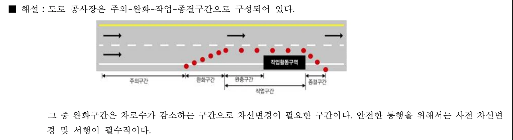

461. Điểm nào là điểm bắt đầu giảm làn đường trong khu vực cần thay đổi làn đường để đảm bảo lưu thông an toàn trong khu vực đang thi công đường?
- ①Điểm bắt đầu khu vực cần chú ý
- ②Điểm bắt đầu khu vực chuyển tiếp
- ③Điểm bắt đầu khu vực thao tác thi công
- ④Điểm bắt đầu của cuối khu vực thi công (trở về làn đường bình thường)
Xem đáp án
Đáp án
② Điểm bắt đầu khu vực chuyển tiếp
Căn cứ
Khu vực thi công đường gồm đoạn cảnh báo trước, đoạn chuyển tiếp, đoạn thi công và đoạn kết thúc. Ở đoạn chuyển tiếp, số làn đường giảm nên cần chuyển làn. Để đi qua an toàn, phải chuyển làn từ sớm và giảm tốc độ.

Phần căn cứ là bản dịch máy để tham khảo.